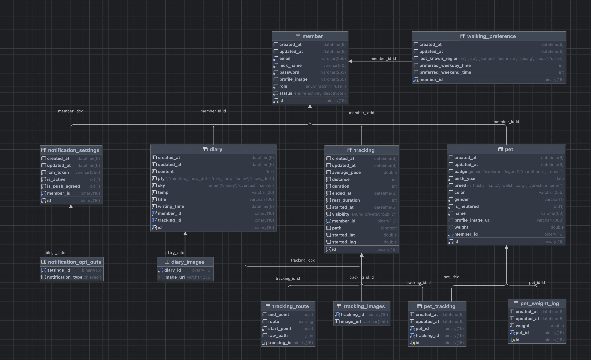

△ Existing Issues
- 반려견 산책 기록이 사진, 메모, 지도, 시간 정보로 흩어져 관리됨
- 반려견별 산책량과 활동 데이터를 한눈에 확인하기 어려움
- 산책, 건강, 일상 기록이 분리되어 장기적인 활동 변화와 성장 과정을 한눈에 확인하기 어려움
산책 데이터를 기반으로 반려견의 산책 기록, 일기, 건강 관리, 날씨 기반 산책 지수, 통계 리포트까지 제공하는 반려견 라이프 로그 플랫폼
주요 기능 및 내 역할 (My Role)
Tech Stack


Problem/Role: 산책 종료 시 발생하는 시간, 거리, 휴식, 경로, 참여 반려견 데이터를 이후 통계와 일기에서 재사용 가능한 활동 데이터로 저장
Performance:
Problem/Role: 저장된 산책 데이터를 일간, 주간, 월간 통계로 제공해 보호자가 반려견의 활동량을 확인할 수 있도록 구현
Performance:
Problem/Role: 보호자가 산책을 단순 메모가 아니라 시간, 거리, 경로, 휴식, 함께한 반려견까지 포함한 하나의 활동 데이터로 남길 수 있도록 구성
Performance:
| Problem | Decision | Rationale | Results |
|---|---|---|---|
| 대량 알림 대상자 조회 시 성능 저하 예상 | 사용자 생성일 기준 Cursor 방식으로 1000명 단위 배치 조회 |
알림 전체 데이터를 정렬 순서대로 순회하는 작업이므로 페이지 번호보다 마지막 조회 기준값을 사용하는 Cursor 방식이 적합 | 전체 대상자를 한 번에 메모리에 올리지 않고 순차 처리 가능 사용자 수가 증가해도 안정적으로 알림 대상자 조회 가능 |
| 산책 경로 데이터가 상세 조회와 위치 기반 분석이라는 서로 다른 목적을 가짐 | 원본 좌표는 JSON, 공간 데이터는 Point, LineString으로 분리 |
경로 재현에는 원본 좌표가 필요하고, 위치 조회에는 Spatial 타입과 인덱스가 적합 | 상세 조회와 위치 기반 추천으로 확장 가능한 경로 데이터 구조 확보 |
| 사용자별 산책 상태에 따라 매일 개인화 리마인드 알림 발송 필요 | Spring Scheduled 선택 | DB 조회, 알림 설정, FCM 발송이 기존 도메인 로직과 밀접해 내부 스케줄러가 적합 | 별도 인프라 없이 배치 조회, 메시지 생성, 실패 토큰 처리를 통합 관리 |
| 지역별 날씨 데이터의 외부 API 반복 호출을 줄일 캐시 전략 필요 | Caffeine Cache 선택 | 데이터 규모가 작고 TTL이 짧아 별도 Redis보다 로컬 캐시가 단순하고 효율적 | 외부 API 호출 감소 및 별도 인프라 없는 경량 캐시 구조 구현 |
| 알림 유형마다 메시지 생성 기준은 다르지만, 대상자 조회와 FCM 발송 흐름은 반복됨 | 대상자 조회/FCM 전송은 공통화하고, 알림별 메시지 생성 규칙만 전략 패턴으로 분리 |
대량 조회, 커서 페이징, FCM 배치 발송은 공통 로직으로 유지하고, 알림별 메시지 생성 패턴만 독립적으로 교체 가능 | 새 알림 유형 추가 시 공통 발송 흐름은 유지하고, 메시지 생성 전략 패턴만 추가해 확장 가능 |
Solution Steps:
Final Result/Prevention:
이를 해결하기 위해 기간 전체 데이터를 QueryDSL로 한 번에 조회한 뒤 애플리케이션 레벨에서 월 단위로 그룹핑하도록 변경
또한 서로 의존하지 않는 주간 통계 조회는 CompletableFuture로 병렬 처리해 통계 API 응답 시간을 단축할 수 있는 구조로 개선
Solution Steps:
Final Result/Prevention: DB 롤백만으로는 S3 파일이 되돌아가지 않기 때문에, 업로드 성공 시 file key를 S3RollbackEvent로 등록하고, 트랜잭션이 실패한 경우에만 AFTER_ROLLBACK 단계에서 S3 파일을 삭제하도록 보상 트랜잭션을 적용
Implementation:
code-reviewer 에이전트:
코드 변경 사항을 검토하는 역할로 분리
보안 취약점, 성능 문제, N+1 쿼리 가능성, 예외 처리 방식, 프로젝트 컨벤션 준수 여부를 중점적으로 점검하도록 정의
project-manager 에이전트:
구현 세부사항보다 아키텍처 방향, 기능 우선순위, 기술 선택의 타당성을 검토하는 역할로 분리
복잡한 기능을 구현하기 전 데이터 흐름, 도메인 책임, 확장 가능성을 먼저 점검하는 용도로 활용
PR 작성 컨벤션:
git diff, 커밋 히스토리, 변경된 DTO/Service/Exception 구조를 분석해 PR 초안을 만들 수 있도록 규칙을 정의
Summary, Changes, Test Scenarios 형식을 고정해 PR 설명 품질을 일정하게 유지
커밋 메시지 컨벤션:
변경 파일과 작업 의도를 기준으로 커밋 메시지 초안을 작성할 수 있도록 형식을 정의
type, subject, issue number, 변경 클래스별 상세 내용을 포함하도록 구성
Result
<> GitHub Repository
https://github.com/2026-SubProject-PuppyRun/BackEnd